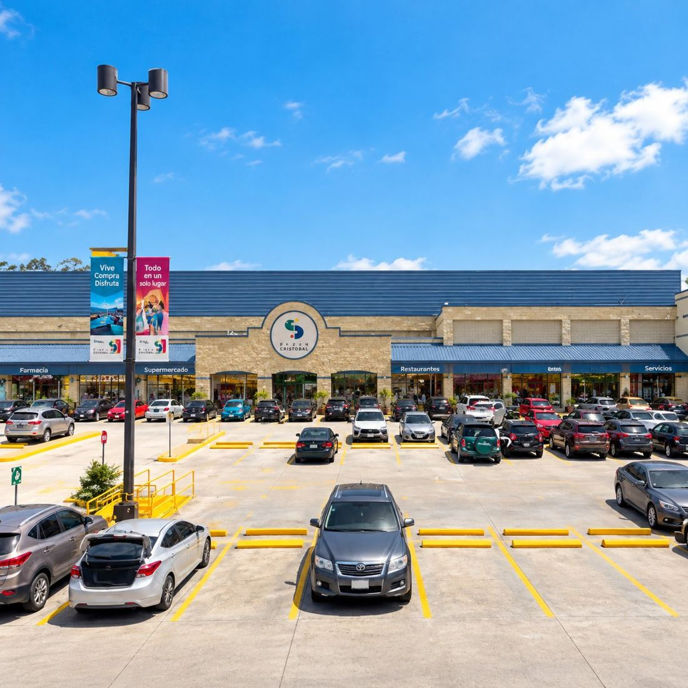
El primer centro comercial de la firma y el punto de quiebre: el paso de desarrollar vivienda a desarrollar comercio.
Área Cuadrada es una desarrolladora inmobiliaria guatemalteca. Concebimos, estructuramos, construimos y entregamos proyectos, con cuatro décadas de experiencia detrás.
Cada metro cuadrado se planifica con propósito. Acompañamos el proyecto completo: desde la oportunidad hasta la llave en mano.
Identificamos oportunidades de tierra con potencial real de desarrollo.
Diseñamos el producto inmobiliario: qué se construye, para quién y en qué m².
Estructuramos la viabilidad financiera y legal de cada proyecto.
Ejecutamos la construcción hasta la entrega, con rigor técnico en cada fase.
A2 no opera los activos una vez entregados. Cuando un proyecto requiere operación, esta queda en manos de un operador independiente con marca propia.
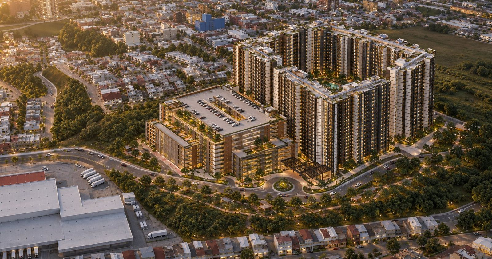
Marca el inicio de una nueva etapa: la primera obra que desarrollamos como A2, con cuatro décadas de experiencia detrás.
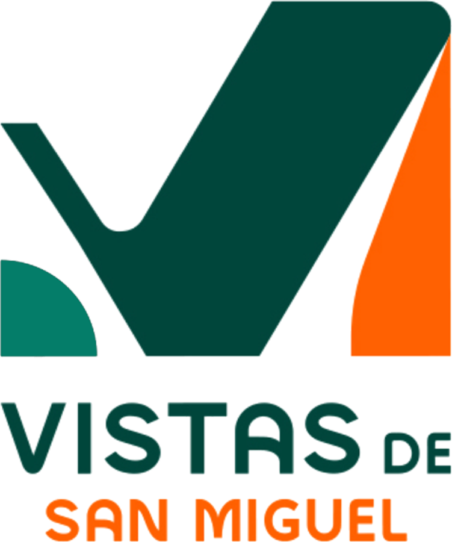
La historia de Arqs. M. Urruela, la firma que dio origen a A2.
Arqs. M. Urruela nace en 1985 como el estudio de arquitectura del arquitecto Mauricio Urruela. Durante sus primeros años, la firma se dedicó exclusivamente al diseño, construyendo un criterio técnico y una forma de entender la ciudad que marcarían todo lo que vendría después.
A principios de los noventa, la firma dio el salto a desarrollar sus propios proyectos, comenzando con un pequeño condominio de casas. A finales de esa década llegó su primer centro comercial, Plaza San Cristóbal, y con él una nueva identidad: Arqs. M. Urruela se consolidaba como desarrolladora.
Durante los años 2000 y 2010, el portafolio creció hasta sumar siete centros comerciales y decenas de proyectos residenciales en distintos puntos del área metropolitana.
En plena planificación de su siguiente plaza, la pandemia detuvo todo. Lejos de ser un final, ese alto abrió un periodo de reestructuración y reinvención interna que culminó en 2025 con el nacimiento de A2.
Una selección de los proyectos que definieron la trayectoria de la firma, en orden cronológico.

El primer centro comercial de la firma y el punto de quiebre: el paso de desarrollar vivienda a desarrollar comercio.
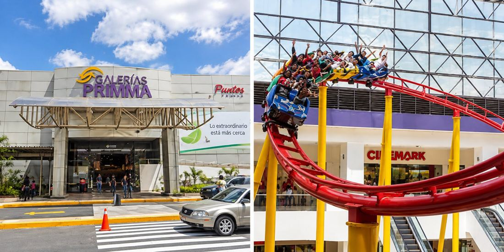
Reconocido por su techo curvo iluminado y por albergar una montaña rusa bajo techo.
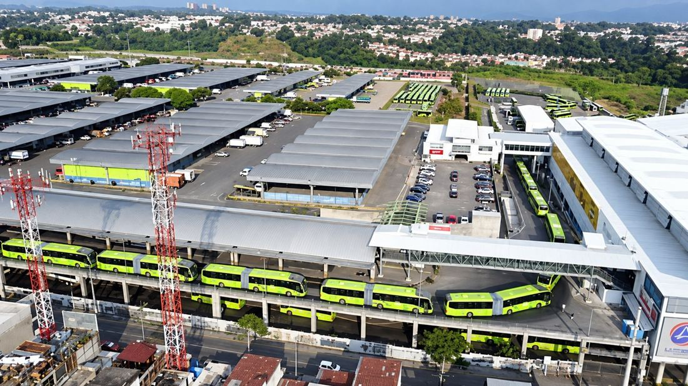
Integra la estación de transferencia entre buses extraurbanos y el Transmetro, desarrollada en colaboración con la Municipalidad.
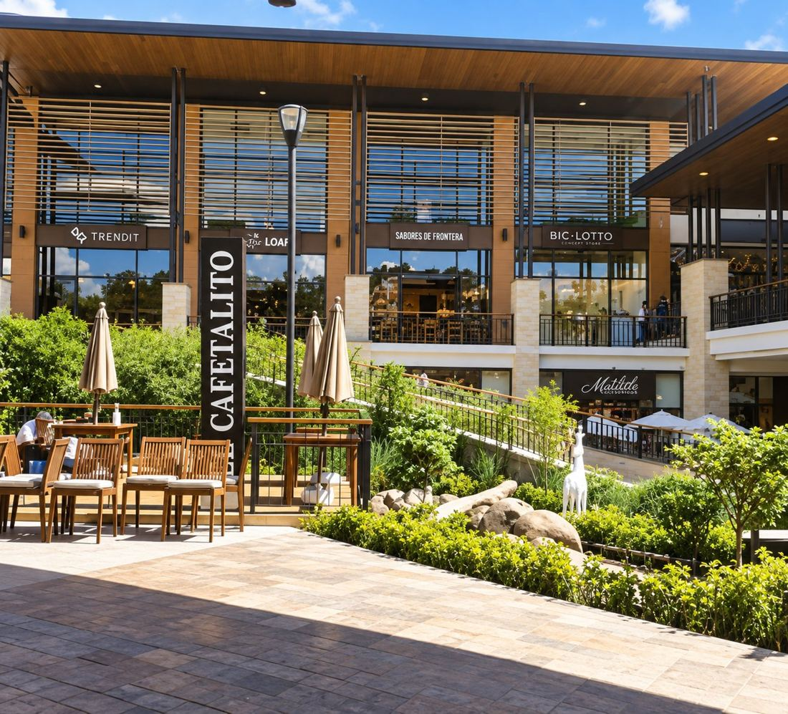
El desarrollo más reciente del portafolio comercial, sobre uno de los corredores de mayor crecimiento del área metropolitana.
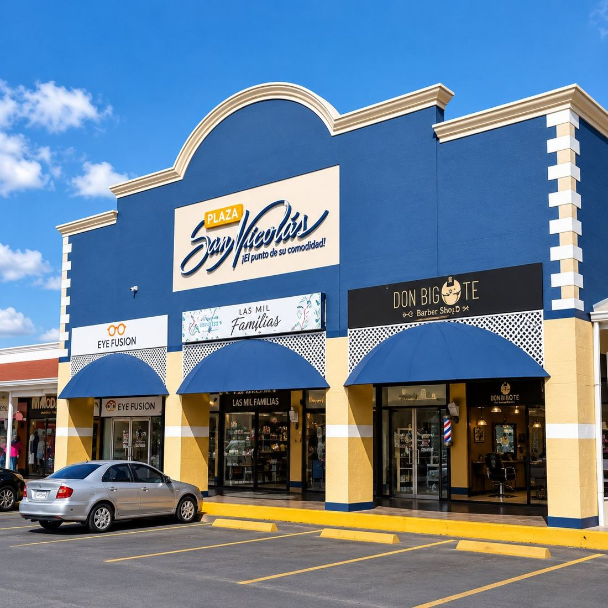
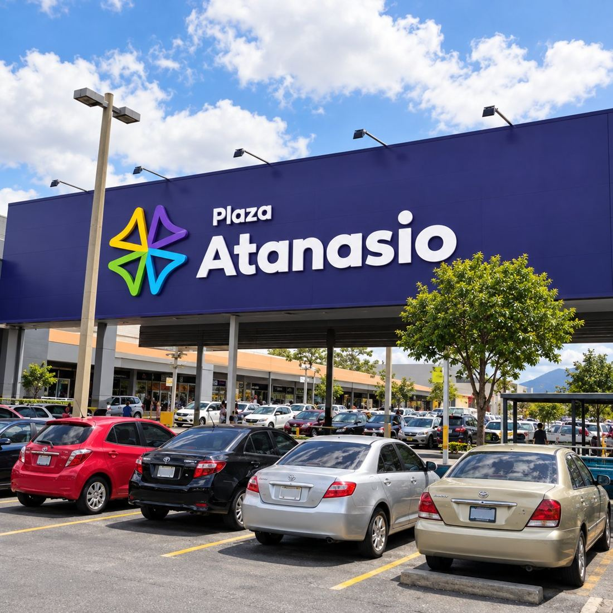
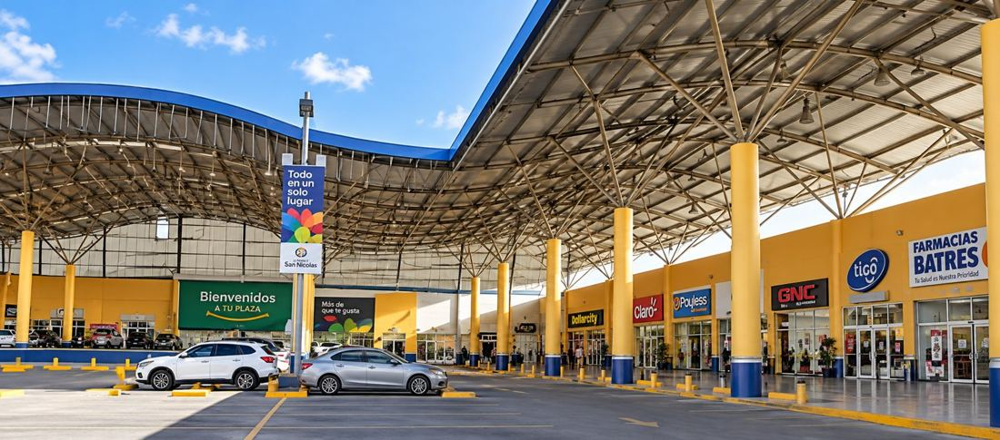
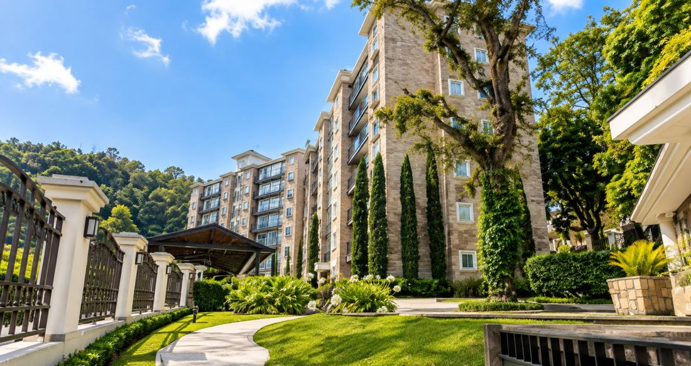
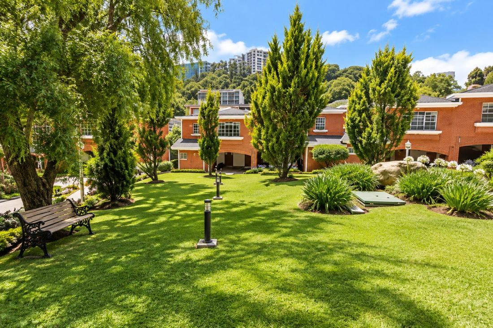
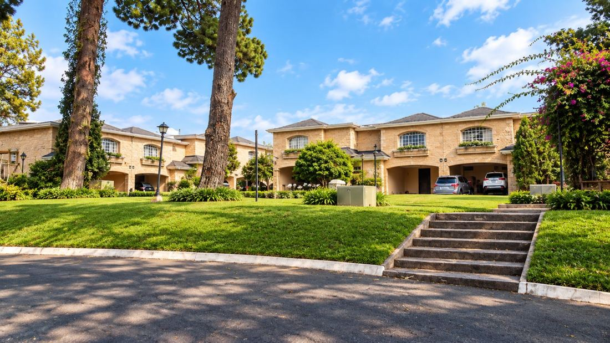
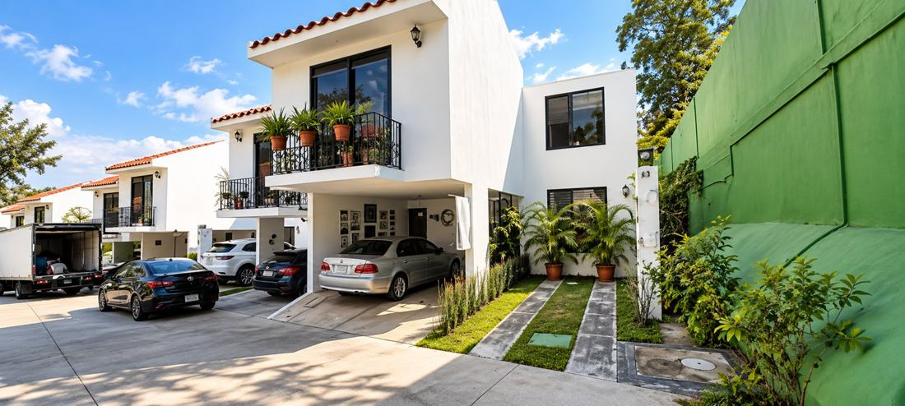
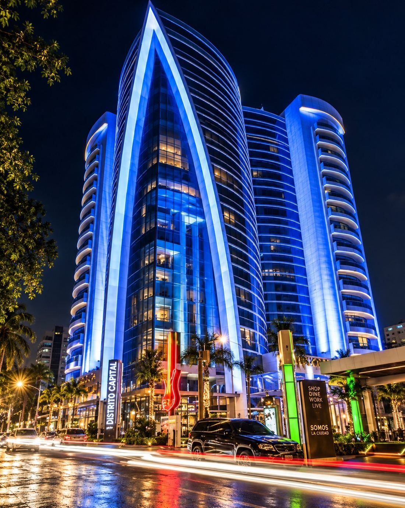
proyectos de terceros en los que Arqs. M. Urruela fue parte, sin dejar de ofrecer sus servicios a quien los buscaba.
A2 no es una empresa nueva: es la evolución natural de Arqs. M. Urruela.
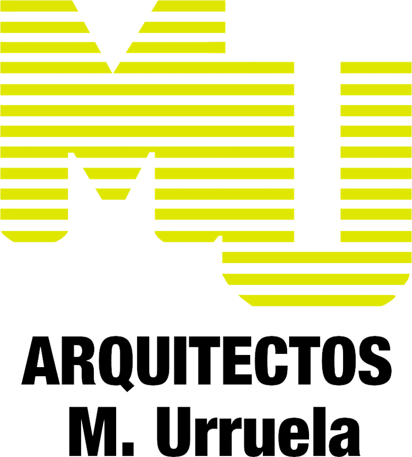
A2 lleva consigo los 40 años de experiencia de Arqs. M. Urruela: su estructura administrativa, su conocimiento en desarrollo y construcción, y una red de relaciones construida proyecto a proyecto durante cuatro décadas.
La pausa que impuso la pandemia se convirtió en una oportunidad para mirar hacia adentro. Hacía años que nuestra vocación ya no era diseñar, sino desarrollar, y el nombre «Arquitectos» había dejado de describir lo que éramos. El amarillo que nos identificó por 40 años sigue siendo nuestro color, por decisión propia.
Área Cuadrada: Innovación + Desarrollo. Una desarrolladora que estructura y ejecuta proyectos inmobiliarios, con una nueva generación de talento y un equipo técnico renovado que suma su visión a la experiencia heredada.
Desarrollar espacios que eleven la forma en que vive y trabaja Guatemala, con rigor técnico y visión de largo plazo.
Ser la desarrolladora de referencia en la región por la calidad de lo que construye y la confianza que genera.
Innovación + Desarrollo. Pensar distinto cada proyecto y ejecutarlo con precisión.
Medimos dos veces. Cada decisión se sustenta en números, planos y datos.
Buscamos mejores formas de diseñar, financiar y construir, no la forma de siempre.
Transparencia con inversionistas, compradores, autoridades y comunidades.
Cada proyecto debe aportar a su entorno y sostenerse en el tiempo.
Si tenés un terreno, una oportunidad o querés invertir en nuestro próximo desarrollo, conversemos.